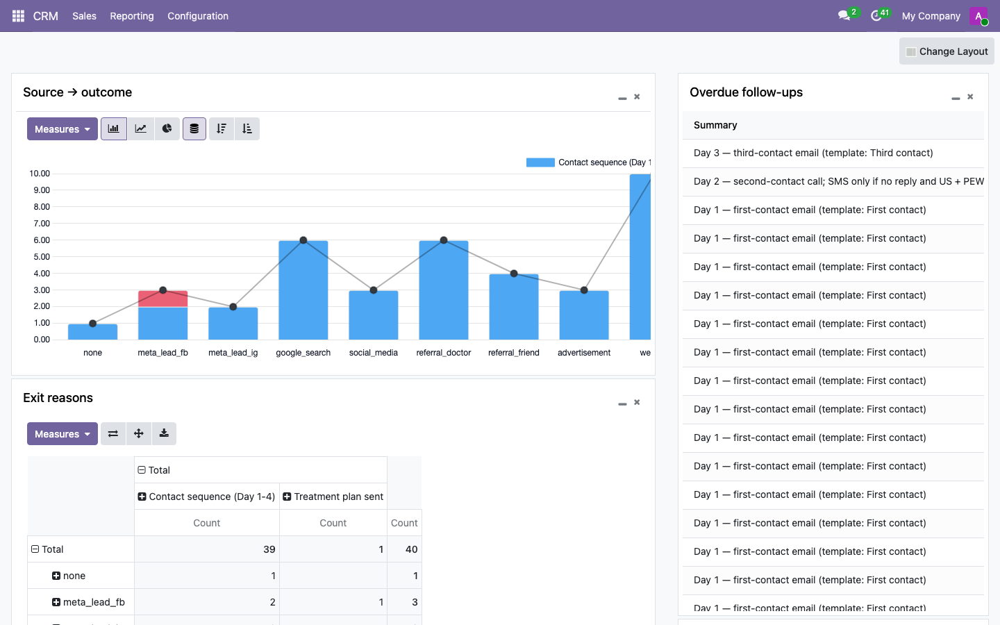
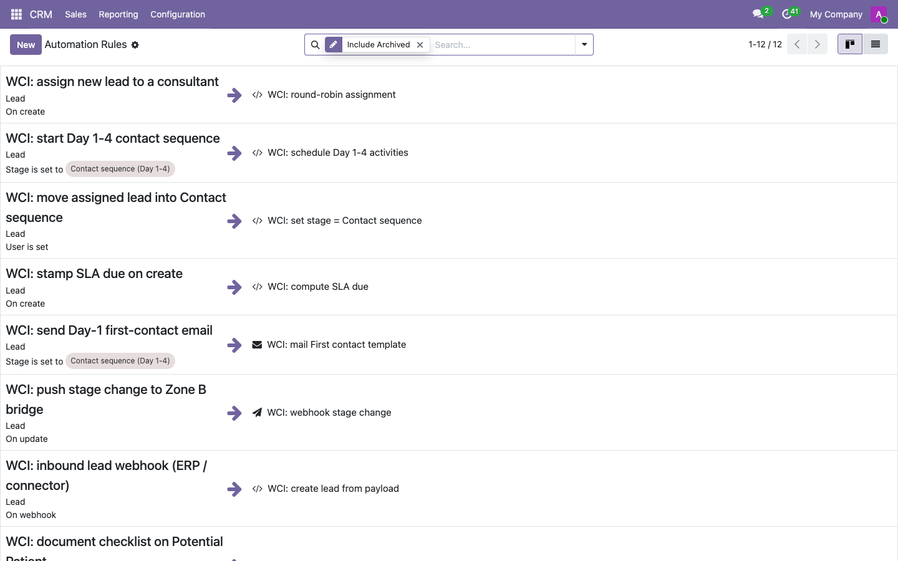

Williams Cancer Institute · Admissions
Admissions CRM: decision, design and rollout
The platform we recommend and why, what Admissions gains over the current ERP, how it connects to CloudTalk, the ERP, email and the clinical systems, the workflows for each stage of the patient journey, how call analysis and AI coaching fit in, and what we need from WCI to run it.
Recommendation
Replace the admissions layer of the ERP with Odoo Community, self-hosted in a WCI-owned AWS account, starting with a parallel run alongside the ERP. The ERP stays in place for everything else until the pilot proves out.
Why Odoo
We evaluated six open-source platforms and eleven commercial CRMs that will sign a Business Associate Agreement, against the same requirements: a lawful place for patient data, the automations Admissions needs, a clean connection to CloudTalk and the ERP, an audit trail, a sensible cost for eight users, and room to add call analysis and AI coaching later. Odoo is the recommendation for six reasons.
- It meets every requirement without a catch. Every commercial option we looked at fails at least one: a HIPAA switch that cannot be reversed (GoHighLevel, HubSpot), health data prohibited in the terms (Pipedrive, Copper, Nutshell), safeguards too thin for patient records (Zoho), or a price set for a hospital system (Salesforce). The other open-source options each lack something we need: a paid workflow engine, undocumented two-factor login, or paid audit logging.
- Patient data stays in WCI's hands. No CRM vendor ever holds it. The only agreement is the AWS Business Associate Agreement, which is free and self-serve, and every safeguard (encryption, two-factor login, roles, access logging) is configured in WCI's own account.
- The automations are built in and unlimited. Timed follow-ups, stage rules, assignment, escalations, webhooks in and out, with no per-run charges and no caps on record types. Everything in this document runs on the free edition.
- CloudTalk connects natively. CloudTalk publishes its own Odoo module: click-to-call from the record; calls, notes, tags and recording links logged on the lead. No other self-hosted option has that.
- It is already working. The pipeline, the Day 1 to 4 sequence, the alerts and the hand-offs run today in a prototype built on invented test data. Nothing here is a slide-deck promise.
- It is open, so the AI layer can sit beside it. Because we control the code and the data, call transcripts, analysis and coaching prompts can be produced by a HIPAA-covered AI service in the same AWS account and written straight onto the lead. Commercial CRMs either exclude their AI from the BAA or do not say.
Cost: no licence. AWS hosting of roughly $100 to $300 a month, about $4k to $11k over three years, against $12k to $47k for the commercial options and $101k for Salesforce.
What Admissions gets, compared with today
| Today (ERP + Gmail + CloudTalk + Word) | With Odoo |
|---|---|
| ✗ Website inquiries land in one person's inbox; a profile is typed into the ERP by hand. | ✓ Website, ERP, Meta and phone inquiries create the record automatically, with the source recorded. |
| ✗ Leads are assigned manually, every day, by the Head of Admissions. | ✓ Assigned on arrival to the consultant with the lightest load; capacity per consultant is a setting. |
| ✗ The Day 1 to 4 sequence lives in each consultant's memory and Gmail templates. | ✓ The sequence is created as dated tasks the moment a lead is assigned; the Day-1 email sends itself from one shared template set. |
| ✗ No alert when a task is missed; supervision means opening the ERP, Gmail and CloudTalk one by one. | ✓ Overdue digest to each consultant and the Head of Admissions every morning; a supervision dashboard with source, outcome, closing reasons and overdue work. |
| ✗ Phone numbers are copied from the ERP into CloudTalk to dial. | ✓ Click-to-call from the record; calls, notes, tags and recording links land on the lead. |
| ✗ Not-a-Candidate letters are assembled from a Word template by hand. | ✓ One click sets the closing reason and produces the letter. |
| ✗ Which sources produce patients is not reported by anyone. | ✓ Source-to-outcome report on the dashboard, using the ERP's own source labels. |
| ✗ The intake form travels by email as a PDF. | ✓ Public form collects contact details and consent only; documents are requested from the record with a checklist and reminders. |
| ✗ No record of who viewed or changed what. | ✓ Every create, read, change and delete on a patient record is logged. |
| ✗ Call analysis, if any, happens in a vendor AI outside any agreement. | ✓ Transcripts and analysis stay in WCI's account under a BAA and land on the lead as summaries, coaching and flags. |
| ✗ Hosted on a shared web host that disclaims HIPAA. | ✓ Runs in WCI's own AWS account under the AWS Business Associate Agreement; encrypted at rest and in transit. |
How it connects: CloudTalk, the ERP, email, Workspace, clinical systems
- ERP. During the transition the ERP stays the system of record. Odoo reads leads and history through the ERP's external API and mirrors stage changes back, so Admissions can work in either while the pilot runs. When the pilot holds, Admissions moves to Odoo and the ERP is retired for admissions or kept for back-office use.
- CloudTalk. Connected through the module CloudTalk publishes for Odoo: click-to-call from the record; calls, notes, tags and recording links logged on the lead; contacts kept in sync. CloudTalk itself is unchanged.
- Email. Sequence and reminder emails go out through AWS SES under the AWS Business Associate Agreement, from WCI's own domain. Postmark, which we use for other clients, declines to sign a BAA and is therefore not used for patient email. One-to-one mail stays in Gmail.
- Google Workspace. Consultations are scheduled from the record into Google Calendar with the Zoom link; one-to-one mail stays where it is.
- DrChrono, Ambra, Zoom. Unchanged. The CRM holds a link and a status ("images received"), never the clinical content.
Inbound lead flow: every source, one path
The public form asks for name, email, phone, location and consent to be contacted. No medical questions appear on the public site; medical information is collected later, after consent, through the document checklist. Inquiries that need a human decision before any outreach (for example an out-of-scope request) are routed to the Head of Admissions instead of the sequence.
The workflows we will build: one per stage of the patient journey
Each stage has its own automation, its own tasks and its own email templates. Templates are drafted by us and approved by WCI before they go live; nothing sends that WCI has not read.
1 · Inquiry received
2 · Contact sequence, Day 1 to 4
3 · Potential patient: documents
4 · Tumor Board review
5 · Consultation
6 · Treatment plan sent
7 · Patient
Closed or dormant
Booking mechanism
Phase 1 (now): consultants book from the record. Odoo creates the Google Calendar event with the Zoom link, sends the confirmation and the 24-hour and 1-hour reminders, and turns a no-show into a reschedule task. The calendar stays the one WCI already uses.
Phase 2 (once counsel confirms the scope): a self-serve "pick a time" page for candidates, hosted in WCI's account, so the consultation invitation carries a booking link instead of an email exchange. This needs either the Odoo appointments add-on or a scheduling service that signs a BAA; we will propose the option once the parallel run is stable.
Tasks, ownership and no missed opportunities



AI-ready by design: call analysis, script coaching and opportunity flags
Yes, this approach is built for it, and it is the only shape that keeps call analysis compliant. Call audio is patient data. The rule we design to is simple: recordings and transcripts never leave WCI's own AWS account, the AI that reads them runs under a Business Associate Agreement, and its output lands on the lead record where a consultant or the Head of Admissions acts on it. Odoo makes that possible because we control the record and the code; a commercial CRM's built-in AI either sits outside its BAA or does not say.
What the AI layer will do, in the order we will build it
- Call summary and next step on every recorded call. After a call, the lead shows a short summary, the reasons raised (location, cost, insurance, timing), and a suggested next action. The consultant confirms or edits it; nothing is sent without a person.
- Script coaching in the record. The approved admissions script lives in the CRM by stage. The analysis marks which parts of the script were covered on the call and which were missed, and surfaces the right passage for the next touch: how to present the price range, how to handle the Mexico question, what to say when insurance comes up.
- Opportunity and risk flags. Calls where the caller showed strong intent, asked to be called back, or raised an objection the script answers well are flagged to the consultant the same day; calls that went badly are flagged to the Head for coaching. Over time this feeds the lead score already built into the pipeline.
- Weekly findings for the Head of Admissions. Which objections are rising, which script passages correlate with progress to Potential patient, which sources bring callers who convert. Presented as proposed changes to the script and the sequence, approved by WCI, never applied automatically.
What it integrates with, and what has to be true first
- CloudTalk data. Recording links, call metadata and tags already flow into Odoo through CloudTalk's module. For analysis we pull the recording itself through CloudTalk's API into WCI's AWS account. That needs CloudTalk's Business Associate Agreement to cover recordings and API access, which is the first item in "What we need from WCI".
- CloudTalk's own AI Analytics. It sends audio and transcripts to third-party AI providers that are not covered by a BAA. We recommend using CloudTalk for capture only and doing transcription and analysis inside WCI's account. If CloudTalk's BAA covers its AI Analytics, that changes and we can use its transcripts directly.
- The AI service. A HIPAA-covered model service in WCI's name (AWS Bedrock or Anthropic Enterprise both sign BAAs), so the model never sees patient data outside the agreement.
- Call recording notice. A consistent recording announcement on every line, and consent recorded on the lead, before analysis starts.
- The ERP's history. Past call notes and outcomes come across through the ERP's API, so the analysis can learn from what worked before.
Sequencing: the CRM and CloudTalk connection first (weeks 1 to 4), transcription and call summaries once the CloudTalk agreement is in hand, script coaching and the weekly findings after that. Each step is useful on its own.
What else we looked at
We compared Odoo against the open-source alternatives (EspoCRM, Frappe CRM, Twenty, SuiteCRM, Medplum) and the commercial CRMs that will sign a Business Associate Agreement (GoHighLevel, HubSpot Enterprise, Zoho, Salesforce Health Cloud, monday, LeadSquared and others).
| Option | Where it fell short for WCI | 3-year cost, 8 users |
|---|---|---|
| Odoo Community | Chosen. | $0 licence · AWS hosting about $4k to $11k |
| GoHighLevel | Good all-in-one with its own phone system, but the HIPAA package cannot be reversed once bought, coverage of live calls is not spelled out, and the workflow engine has caps and per-run charges. Worth a second look only if CloudTalk cannot provide a BAA. | about $24k to $29k |
| HubSpot Enterprise | Signs a BAA, but its health-data mode is permanent and disables the personalised email tools we would use most. | about $22k to $47k |
| Zoho CRM | Cheapest BAA, but thin safeguards: viewing a patient record is not logged. | about $12k to $15k |
| Salesforce Health Cloud | Strong, but priced for a much larger organisation. | about $101k |
| EspoCRM · Frappe · Twenty | Open source, but each is missing something we need: a paid workflow engine, undocumented two-factor login, or paid audit logging. | $0 to low, plus hosting |
| Pipedrive · Copper · Nutshell · Keap · Close · Attio | Either prohibit health data in their terms or offer no agreement covering it. | n/a |
What we need from WCI
Two items decide the compliance picture and come before anything is purchased or migrated:
- CloudTalk's signed Business Associate Agreement: the executed text, which plan it requires, and whether the AI Analytics add-on is covered by it. If CloudTalk will not sign one, telephony has to change regardless of which CRM we use.
- Counsel's view on the admissions records: confirmation of how WCI treats lead and inquiry records under HIPAA, so the controls we configure match the obligation.
- An AWS account owned by WCI for the CRM, with the AWS Business Associate Agreement accepted (a free, self-serve step in AWS Artifact). We can set this up with you.
- ERP access: the read-only server login we were given no longer works, so a fresh one please; plus an external API key issued by an ERP administrator and an OK to run a read-only test against
/api/external/patientsand/timeline. - From Daniel: how the Meta lead automation writes into the ERP; the shape of the public
/patients/publicendpoint; whether the ERP can send a webhook when a patient record is created or changes stage; and moving the ERP off its development server onto a production build behind nginx, running as a non-root user. - Google Workspace: confirm the Business Associate Agreement has been accepted in the Admin console.
- Sender domain: permission to verify a sending domain in AWS SES for the sequence emails.
- Templates: the current first-contact, third-contact and "more information" emails, so the new template set starts from what works today.
The first thirty days
- Week 1 to 2: the access items above; AWS account and BAA; the prototype deployed into WCI's account, still on test data; CloudTalk module connected.
- Week 2 to 4: parallel run. Odoo mirrors the ERP's leads through the API while Admissions keeps working in the ERP; we tune stages, sequences, templates and the digest with the Head of Admissions.
- Week 4 onward: two consultants work new inquiries in Odoo; everyone else follows once the pilot holds.
Questions or corrections: reply to Jarred directly.